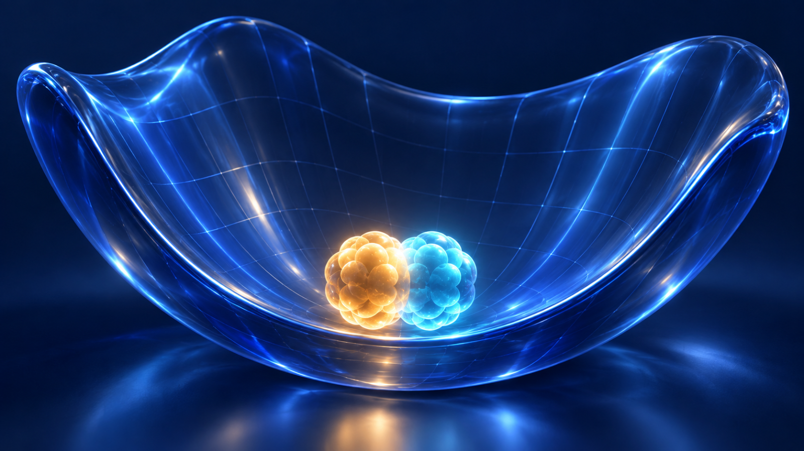
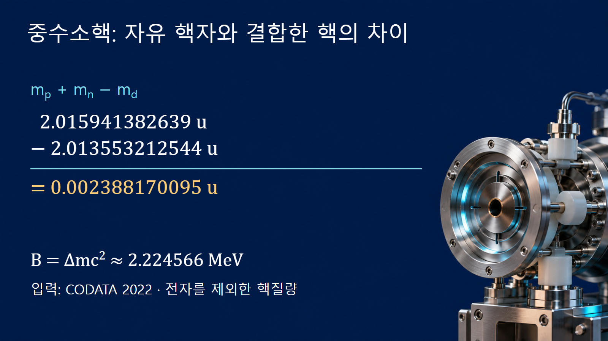
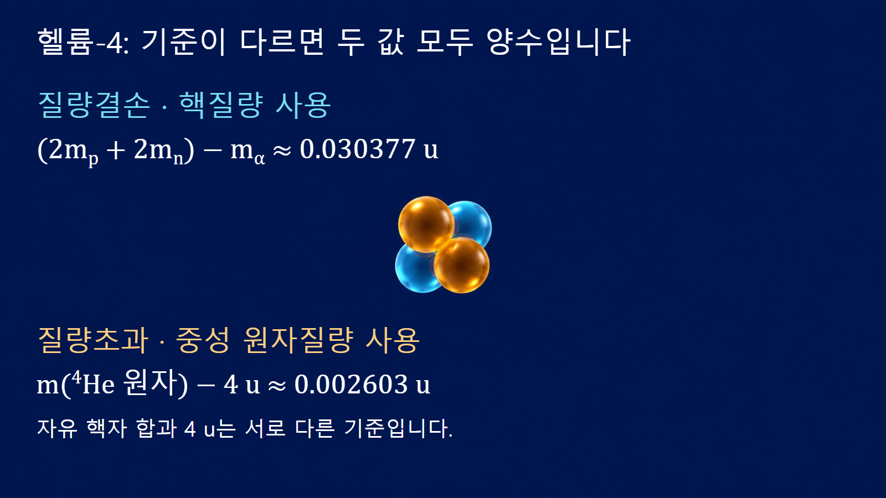

질량·에너지와 핵반응 · 022
질량결손
결합된 원자핵의 질량이 자유 핵자 질량 합보다 작은 현상

질량결손은 서로 분리되어 정지한 자유 핵자들의 질량 합에서, 그 핵자들이 결합한 원자핵의 질량을 뺀 값입니다. 핵자가 없어졌다는 뜻이 아닙니다. 같은 양성자와 중성자 수를 가진 두 상태의 정지에너지를 비교하면 결합된 상태가 더 낮고, 그 에너지 차이가 질량 차이로 나타납니다.
무엇을 빼는지 먼저 정합니다
양성자 수를 Z, 중성자 수를 N, 핵질량을 m핵이라고 하면 Δm=Zmp+Nmn−m핵입니다. 여기서 mp와 mn은 자유 양성자와 중성자의 정지질량입니다. 기준 상태는 핵자들을 서로 충분히 멀리 떨어뜨려 상호작용을 무시하고, 전체 질량중심계에서 상대운동 에너지를 0으로 보낸 상태입니다. 핵 속에 있는 양성자 하나의 질량을 따로 재서 부족분을 찾는 계산이 아닙니다.
바닥상태 핵의 질량을 사용하면 바닥상태의 질량결손을 얻습니다. 같은 핵의 들뜬상태는 들뜬에너지 Ex만큼 에너지가 더 크므로 질량이 Ex/c2만큼 증가하고, 자유 핵자 기준의 질량결손은 그만큼 작아집니다.
결합에너지는 질량결손을 에너지 단위로 읽은 값입니다
핵을 자유 양성자와 중성자로 완전히 분리하는 데 필요한 최소 에너지가 결합에너지 B입니다. 두 상태의 질량 차이에 질량-에너지 관계를 적용하면 B=Δmc2입니다. 실제 분리 실험에서 생성입자들이 운동에너지를 가지고 나오면 그 운동에너지까지 공급해야 합니다. 따라서 B는 임의의 충돌 실험에서 보이는 입사에너지와 항상 같지는 않습니다.
반대 방향으로 핵이 만들어질 때는 결합에너지에 해당하는 에너지가 방사선이나 다른 입자의 운동 등에 전달됩니다. 남은 핵만 비교하면 질량이 감소하지만 방출된 에너지까지 포함한 전체의 에너지·운동량은 보존됩니다. ‘질량이 사라져 에너지가 생겼다’는 말보다 어느 상태와 어느 계를 비교했는지 밝히는 설명이 정확합니다.
중수소핵에서 작은 차이를 계산합니다
첫 번째 예시는 양성자 1개와 중성자 1개가 결합한 중수소핵입니다. CODATA 2022의 핵자·핵질량을 사용하면 mp=1.0072764665789 u, mn=1.00866491606 u, md=2.013553212544 u입니다. 자유 핵자의 합은 2.0159413826389 u이고, 여기서 중수소핵 질량을 빼면 Δm≈0.002388170095 u를 얻습니다.
1 u에 대응하는 에너지 931.49410372 MeV를 곱하면 B≈2.224566 MeV입니다. 중수소핵은 두 핵자로 이루어져 있지만 질량이 정확히 2 u인 것은 아닙니다. 질량수 A=2는 핵자의 개수이고 u는 탄소-12 원자의 질량을 기준으로 정한 단위이기 때문입니다. 제시한 긴 자릿수는 뺄셈을 재현하기 위한 입력값이며, 결과의 모든 자리가 무오차라는 뜻은 아닙니다.

헬륨-4에서는 네 핵자가 그대로 남습니다
두 번째 예시는 양성자 2개와 중성자 2개로 이루어진 헬륨-4 핵, 즉 알파입자입니다. 같은 CODATA 자료에서 mα=4.001506179129 u입니다. 자유 핵자 질량 합은 2mp+2mn=4.0318827652778 u이며, 따라서 Δm≈0.030376586149 u, B≈28.295611 MeV입니다. 계산 전후 Z=2, N=2이며 부족한 질량을 ‘사라진 중성자의 일부’로 해석하지 않습니다.
전체 결합에너지와 핵자당 평균은 다른 양입니다. 이 예시에서 B/A≈7.073903 MeV이지만, 이것은 특정 중성자 하나를 떼어 내는 데 필요한 에너지가 아닙니다. 실제 한 입자 분리에너지는 분리 후 남는 핵의 질량까지 사용해 구합니다. 원자핵의 전체 분해와 특정 반응의 에너지 계산을 구별하는 출발점이 바로 비교 대상의 선택입니다.
| 핵 | 자유 핵자 질량 합 / u | 결합한 핵질량 / u | 질량결손 / u |
|---|---|---|---|
| 중수소핵 (Z=1, N=1) | 2.015941382639 | 2.013553212544 | 0.002388170095 |
| 헬륨-4 핵 (Z=2, N=2) | 4.031882765278 | 4.001506179129 | 0.030376586149 |
원자질량표에는 전자도 들어 있습니다
중성 원자의 질량에는 Z개의 전자와 전자 결합에너지가 포함됩니다. 전자 전체의 양의 결합에너지를 Be라고 정의하면 m원자=m핵+Zme−Be/c2입니다. 따라서 원자질량을 핵질량 자리에 그대로 넣으면 전자질량만큼의 큰 오류가 생깁니다. 헬륨-4의 원자질량은 약 4.00260325413 u로, 앞에서 사용한 알파입자의 질량과 다릅니다.
원자질량표만 사용할 때는 양성자 질량 대신 중성 수소-1 원자질량을 사용하여 Δm≈Zm(1H)+Nmn−m원자로 계산합니다. 양쪽의 전자 수가 Z로 같아 전자 정지질량이 상쇄됩니다. 그러나 전자들의 결합에너지는 서로 달라 완전히 같은 식은 아닙니다. 정확한 핵 결합에너지는 이 원자질량 차이에 c2를 곱한 값에서 Be(원자)를 빼고 ZBe(수소)를 더한 값입니다. MeV 규모의 개념 계산과 정밀 질량 분석은 요구되는 보정 수준이 다릅니다.
질량초과는 기준이 다른 별개의 양입니다
질량표에서 질량초과는 보통 중성 원자의 질량에서 A u를 뺀 값을 에너지 단위로 나타냅니다. 기준이 자유 핵자 질량 합이 아니라 ‘질량수 곱하기 원자질량단위’입니다. 헬륨-4의 원자질량 4.00260325413 u는 4 u보다 크므로 질량초과는 양수이며 약 2.4249 MeV입니다. 동시에 이 핵의 질량결손도 양수입니다. 두 결과는 서로 다른 기준점을 사용하므로 모순되지 않습니다.
질량결손을 A−m의 단순한 수치 차이라고 외우면 헬륨-4에서 부호부터 잘못됩니다. 표에 mass excess가 실려 있다면 그 값을 binding energy로 읽지 말고, 표의 단위와 정의를 먼저 확인합니다. 질량수는 무차원 정수이므로 실제 뺄셈에서는 반드시 A u처럼 질량 단위를 갖춰야 합니다.

작은 차이를 구할수록 입력 자릿수가 중요합니다
중수소핵 예시의 질량을 모두 소수 둘째 자리로 먼저 반올림하면 1.01+1.01−2.01=0.01 u가 됩니다. 이는 정확한 입력으로 구한 약 0.002388 u보다 네 배 이상 큰 값입니다. 비슷한 크기의 두 수를 빼는 계산에서는 조기 반올림이 결과를 크게 흔듭니다. 입력 자료의 충분한 자릿수를 유지한 뒤 마지막 결과를 필요한 자리로 반올림합니다.
정밀 평가에서는 각 질량의 불확실성과 상관관계도 확인합니다. 여기의 수치는 정의와 규모를 익히기 위한 재현 계산이며 핵자료 평가를 새로 수행한 결과가 아닙니다. 특정 핵반응의 Q값은 그 반응에 참여하는 모든 반응물과 생성물의 질량 차이로 계산해야 합니다. 하나의 핵이 가진 전체 질량결손을 그대로 그 반응의 방출에너지로 대입하지 않습니다.